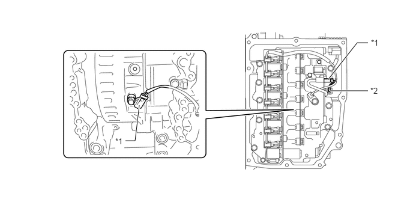

构造
UB80E 自动传动桥采用了变速器转速传感器 (NT) 和变速器转速传感器 (NC)。因此，ECM 可检测齿轮的换档正时并适当控制发动机扭矩和液压以响应各种条件。
变速器转速传感器 (NT) 检测传动桥的输入转速。C2 离合器鼓被用作本传感器的正时转子。
变速器转速传感器 (NC) 检测传动桥的输出转速。中间轴主动齿轮用作该传感器的正时转子。
霍尔型转速传感器由磁铁和霍尔集成电路组成。霍尔集成电路将正时转子旋转过程中产生的磁通密度变化转换为电信号，并将该信号输出至 ECM。

| *1 | 变速器转速传感器 (NC) | *2 | 变速器转速传感器 (NT) |